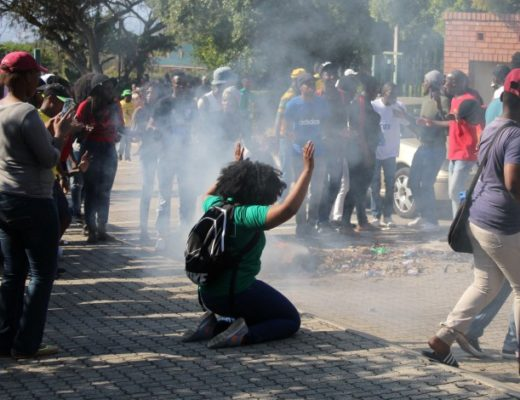

A day in a life of a TUT Student
Amazingly I didn't want to do IT meaning is not my first choice I chose higher certificate in Civil Engineering and I well IT was the last thing on my mind, after a several months I was amazingly rejected and didn't meet the requirements what-so-ever, So I said what the heck let try it the a faint sound of car accidents and police sirens whined as I gazed at the sun while daydreaming, is that moment when I knew that its gonna be a long four years.
First day of class wondering where I'll catch the bus or taxi to main campus but I felt a whispering breeze that said "you're going nowhere, Soshanguve you forever stay". then I knew that all of my dreams came crashing down. My first experience of a strike was after three days of registering, I heard saying of people who go to class will be hung from the ceiling and "like a bulb" was very clear and sounded honest so I cowardly waited for a message from the University stating something like you can come to school the strike is over. Nowadays are fizzled out and extinct due to strike instigators found and charged with vandalism or something worse like exclusion, so many decided it was fun till it lasted.  I was already making it big I never thought I could survive coding but here I am a winner in c++ till I was introduced to Technical Programing I/II, c++ when from c++ to c-- in seconds, GUI came in backend classes came in, white hair from senior students as a sign of shattered dreams. TPG was the second subject I took an L and a big L with a 43% fail.
Expect the unexpected
"Run if you have to, it might be a strike or some creep lurking in the shadows ready to violate your rights... sorry I thought this was NWU"
{kind=link}